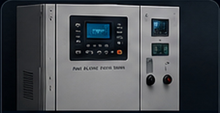
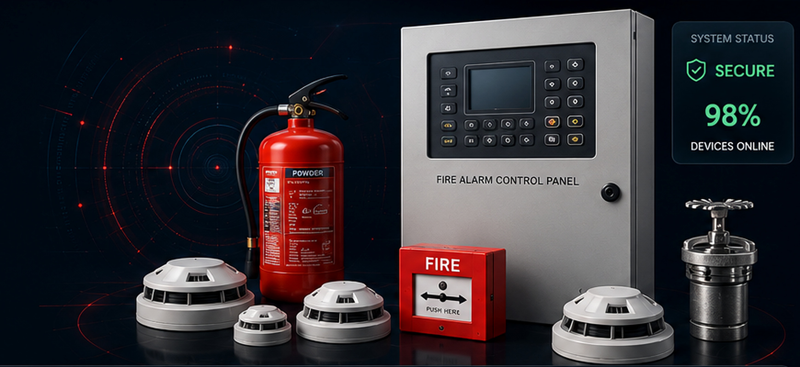
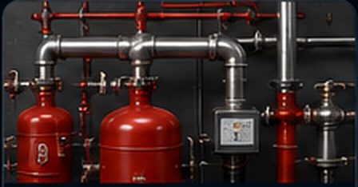

OEM / Manufacturers
Manage OEM details, contacts, performance history and system information.
Learn More →An advanced digital platform for complete monitoring, inspection and management of fire safety systems across Indian Railways.

Manage every critical FDSS / FSDS workflow through one connected safety platform.

Manage OEM details, contacts, performance history and system information.
Learn More →
Plan, assign, monitor and record inspections with a complete digital trail.
Learn More →Track warranty status, claims, expiry dates and component notifications.
Learn More →Generate insightful reports, trends, alerts and performance dashboards.
Learn More →A clean operational view of inspections, component condition, warranty health and system alerts—without decorative placeholder graphics.
Bring inspection, monitoring, warranty and analytics into one unified FDSS / FSDS platform.